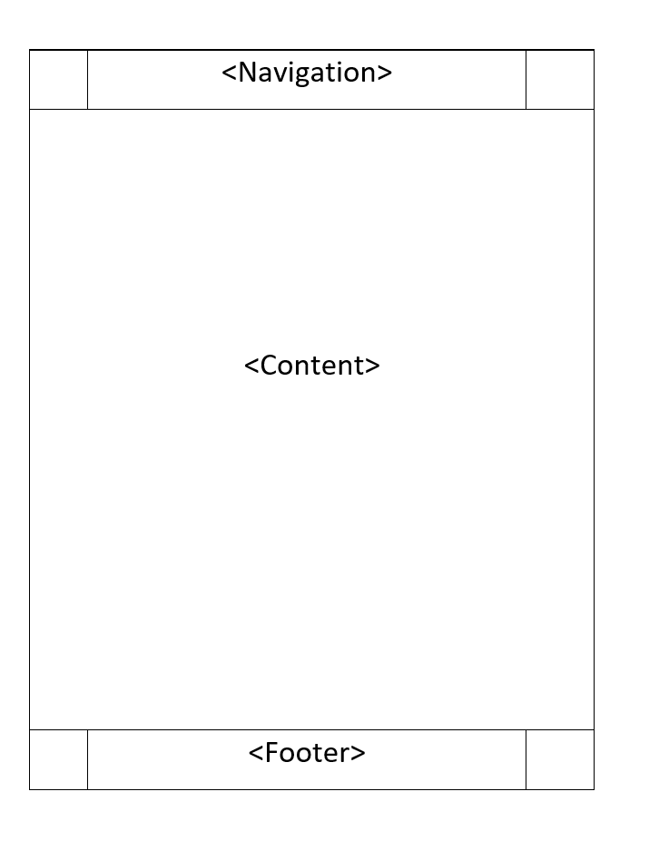

Comments
Reflection
Making this website I really wanted to make the dark theme work without creating jarring design flaws. A minimal look that acehives a lot with nicely placed elements that can shift to page resizing and looks good at almost all sizes was the goal. I feel as if I acheived my design goal. In terms of content I do feel as if I could have improved by integrating more thoughtful text and more images to be more engaging.
Technical Breakdown
 I designed the index page first with this layout as the base plan. i would like the sides to shrink and swell depending on the size of the page and i accomplished that with the use of avoiding static measurements like pt. I instead used rem which scales and is reactive, used percentages for my widths but also designated max-width's as i didnt want my elements like my content to stretch indefinetly. I used a various amount of classes and stacked classes to create a comprehensive and modualar style sheet that I could add to. The goal of the classes was to make it so ubiquitous that when I created the other pages I would not have to crate more styles, they would follow the theme of the website already. I also used some :hover states in the CSS so that my navigation bar would have some feedback in it, although this comes more down to design the technical aspect is limited to the use of the state operator :hover to trigger styles. In addition I also linked fonts that I prefer to be used but also invluded other fonts for redundancy. Admittedly, if the fonts do not load then my three social media buttons which are a custom font will not load and therefore will not work. But this was a scarafice I played with given that websites should be asscessile with the internet.
Design Breakdown
The goal of the design was to minimal and have effective screen elements to be able to navigate and clearly read content without hinderance from over simplification or clutter. The consistent navbar with interactive elements achieve the purpose of a nav bar and I am satisfied with its performance. In the index page the three social media buttons were created using fonts and its purpose of creating a non jarring and aesthetically pleasing way to navigate to my social as well as have feedback on cursor higlight was acheived. The white on black font to background theme was also integral in my pages design and teh images I used also had to follow this principle. The color black was avoided as it can feel empty and jarring which what I didnt want from my website. Pure white was also not used as it felt too bright and too contrasting to the background, a creamy off white was used along width font weight and size to determine headings.